A practical guide to shooting cinematic content with the camera already in your pocket.
4KCreating a Brighter Tomorrow.@stephenxmichael
SHEET 02 — CONTENTS
02 — Contents
Your iPhone Is A Cinema CameraField Guide 001
Inside The Guide
Contents
A practical system for shooting with more intention, more control and less friction.
Fourteen SheetsCover To Close
03The Premise
Stop Treating It Like A Phone
A new way to think about the camera already in your pocket.
04The Foundation
Get Your iPhone Right
Settings, frame rates, lenses and the decisions to make before you shoot.
05Take Control
Native vs. Blackmagic
When speed matters. When control matters.
06The Grade
Build The Image
Shutter, white balance, ISO, ND and the path from Log to final colour.
07Coverage
Shoot With Intention
Wide. Medium. Close. Detail. Environment. Reveal.
08Light + Sound
Fix The Environment
Better light and better audio before more gear.
09The Kit
Build The Rig
Start with what matters. Add gear when the shot calls for it.
10The Workflow
The Workflow
From idea to footage to finished edit.
11The Experiment
iPhone Over Camera
Use the iPhone first. Reach for the camera with a reason.
12Reference
Field Cheat Sheet
The core system condensed into one page.
13Shooting Stars
Content Academy
The larger system behind the Field Guide.
14Creator
About Stephen
The creator behind the guide.
Shooting Stars Content AcademyCreating A Brighter Tomorrow.
001
02 / 14
SHEET 03 — STOP TREATING IT LIKE A PHONE
03 — The Premise
Your iPhone Is A Cinema CameraField Guide 001
Before The Settings
Stop Treating It Like A Phone
I’ve been shooting with dedicated cameras since 2014. For a long time, there was a clear gap between what I could create with my camera and what I could create with my phone.
That gap is still there.
But it’s a lot smaller than it used to be.
Today’s iPhone gives me access to tools and controls that used to exist almost exclusively on dedicated cameras. More importantly, I can apply the same principles I’ve learned behind a camera to something that’s already in my pocket.
That changed the way I look at it.
Still the camera’s Interchangeable lenses · optical depth · files that push further
M02.1
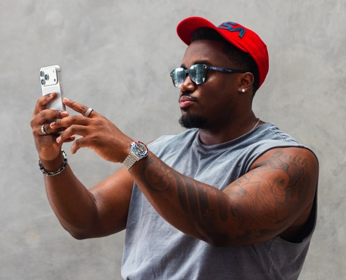
Cinematic Isn’t
A Resolution.
It’s A Series
Of Decisions.
M02.2
Photo · NuanceiPhone beside the pro camera236 × 144 · both in one kit
4K doesn’t make an image cinematic. Neither does 24 fps, Log, a LUT or a manual camera app.
Those tools give you control. What you do with that control determines the image.
The technology gives you the tools.
You still have to make the image.
The Decisions
01Where is the light coming from?
02How is the frame composed?
03Why is the camera moving?
04What shot comes next?
05What should the color make this feel like?
“I’ll take that gap if I can scale my content faster.”
— Stephen
Your phone doesn’t need to replace your camera.
You just need to stop treating it like it isn’t one.
03 / 14
SHEET 04 — GET YOUR IPHONE RIGHT
04 — The Foundation
Your iPhone Is A Cinema CameraField Guide 001
The Foundation
Get Your iPhone Right
Before you download another app or build out a rig, get the fundamentals right.
Set these once and stop deciding every time you pick up the phone.
Seriously.
Wipe The Lens.
Your phone lives in your hand, your pocket and your bag. Fingerprints soften the image before you press record.
M03.1
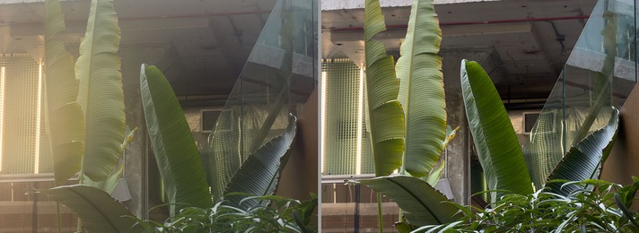
DirtyClean
Choose The Frame RateFor The Shot
4K / 30
Everyday Content
My default for talking heads, lifestyle and natural motion.
4K / 24
Cinematic Motion
The cadence associated with film. On an iPhone it can feel choppier depending on the shot.
4K / 60
Slow It Down
When I want the option to slow the footage down in the edit.
My practical defaults, not universal requirements
Settings › CameraSet Once
Record Video4K · 30 fps
Grid
HDR VideoOff for a simpler, more predictable SDR color workflow
Lock CameraStops the lens switching mid-take
Preserve SettingsCamera Mode
Which Lens To Reach For
1×Main · Default
My starting point for most shots. Strong all-around image and low-light performance.
0.5×Ultra Wide
Tight rooms, establishing shots and exaggerated perspective. Watch faces near the edges.
2×+Get Closer
Useful when you want a tighter frame or more compression.
Focal lengths vary by model
Don’t Pick A Frame Rate
Because It Sounds Cinematic.
Pick It For What The Shot
Needs To Do.
From Stephen
Tap your subject to set focus and exposure.
Touch and hold for AE/AF Lock when you don’t want them shifting during the shot.
04 / 14
SHEET 05 — TAKE CONTROL
05 — Take Control
Your iPhone Is A Cinema CameraField Guide 001
Take Control
Native
vs.
Blackmagic
I use both. The native Camera app is fast, familiar and capable of producing really good footage. Blackmagic gives me more direct control over the image.
The right choice depends on what you’re shooting.
01 · Speed
Native Camera
When Speed Matters
M04.1
Photograph · DeviceNative camera, recording304 × 90 · match M04.2
Why I Use It
Fast
It is already there. Open it and shoot.
Low Friction
Lifestyle, travel and moments that happen quickly.
Great Image
You do not need a manual app to make good content.
Use Native When
01The light is good
02The moment matters more than the setup
03You need to move quickly
04You do not need every setting locked manually
Simple Doesn’t Mean
Low Quality.
02 · Control
Blackmagic Camera
When Control Matters
M04.2
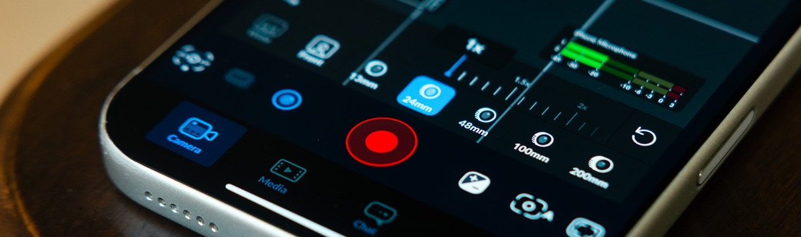
Why I Use It
Manual Control
Shutter, ISO, white balance, focus and exposure.
Consistency
Lock decisions the camera would otherwise change.
Monitoring
More information on screen while I shoot.
Log + Color Workflow
Build the capture around the grade I’m planning.
Use Blackmagic When
01The shot is deliberate
02Lighting is controlled
03Shots need to match
04You are planning to grade the footage
05You want the phone to behave like a traditional camera
The gap is closing.
Apple’s camera tools are adding more pro-level control, too.
Use Native When The Moment
Matters More Than The Setup.
Use Blackmagic When The Setup
Is Part Of Getting It Right.
Neither one makes the shot cinematic. They just give you different ways to get there.
05 / 14
SHEET 06 — BUILD THE IMAGE
06 — Build The Image
Your iPhone Is A Cinema CameraField Guide 001
The Grade
Build The Image
Log gives you room. Correction gets the image back to neutral. The grade is where you decide how it feels.
Those are three different jobs.
Control The Image Before You Grade ItBefore The Color Pass
Frame Rate
For how the footage needs to move.
Shutter
About double the frame rate. 24→1/48, 30→1/60, 60→1/120.
White Balance
Lock it when your workflow allows so it cannot shift mid-shot.
ISO
As controlled as the scene allows. More ISO is not free light.
ND
Cuts light so you keep the shutter you chose.
A starting point for natural motion blur, not a rule
01Log
Capture Information
Log isn’t supposed to look finished in-camera. You are capturing an image with more room to work in post.
Protect the image now. Make it pretty later.
M05.1
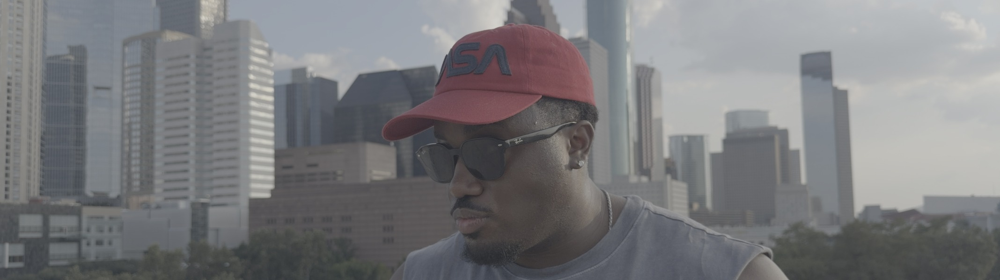
02Corrected
Get Back To Neutral
Exposure, white balance, contrast, natural color. Correction gets the image right. The grade is where you make it yours.
M05.2
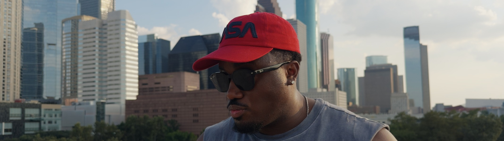
03Graded
Build The Feel
The creative pass. The grade should support the mood of the image, not distract from it. Decide how far it actually needs to go.
M05.3
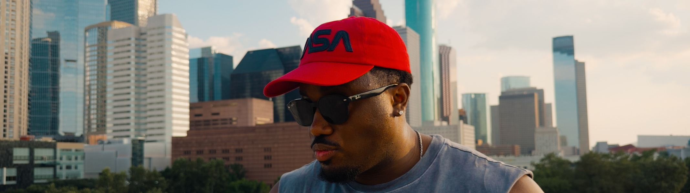
Color Isn’t There
To Rescue A Bad Image.
It’s There To Finish
A Good One.
Log→Correct→Create
M05.1 to M05.3 must be the same frame from the same take. Different shots break the argument.
06 / 14
SHEET 07 — SHOOT WITH INTENTION
07 — Coverage
Your iPhone Is A Cinema CameraField Guide 001
Don’t Just Record It
Shoot With Intention
Settings can improve the footage. Shot selection makes the video.
Grid on. Look at placement, balance, foreground and depth before you hit record.
WMCDEnvRevOne subject · One light · Six frames
M06.1
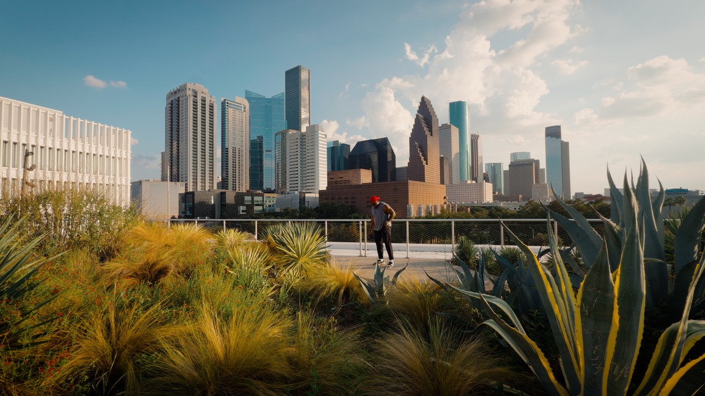
01Wide · Set The Scene
Show me where we are.
M06.2
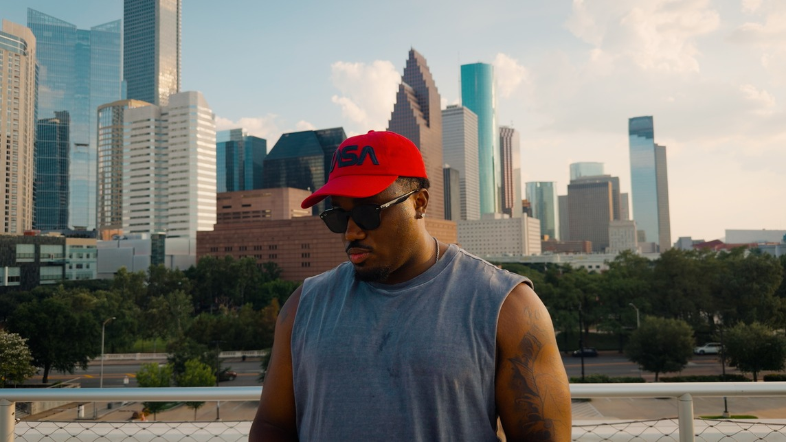
02Medium · Bring Us Closer
Where natural action and talking heads live.
M06.3
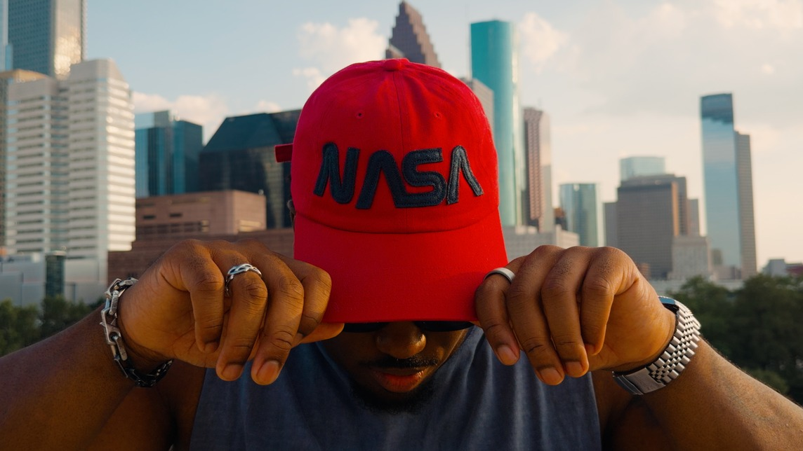
03Close · Create Emphasis
Faces and reactions carry more weight up close.
M06.4
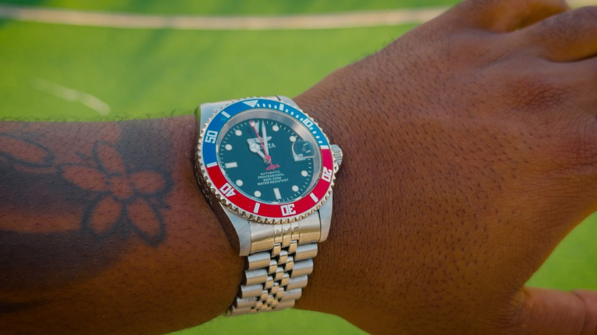
04Detail · Show What Matters
Hands, texture, a product, a button being pressed.
M06.5
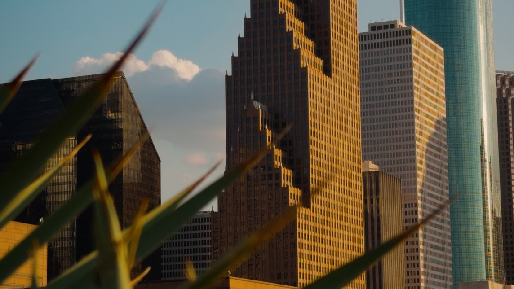
05Environment · Ground The Story
Without the world around it, the story is half told.
M06.6
06Reveal · Give The Shot A Payoff
Hide part of the frame, then reveal what matters.
Don’t Collect Random Pretty Clips.
Collect The Pieces Of An Edit.
Think through the sequence A to Z.
What starts the action? What gets us closer? What detail sells it? What does the place add? What finishes the thought?
07 / 14
SHEET 08 — LIGHT + SOUND
08 — Light & Sound
Your iPhone Is A Cinema CameraField Guide 001
Before More Gear
Light
People will forgive a lot before they will forgive an image they cannot see or audio they cannot understand.
Before you add more gear, fix the environment.
Start With What’s Already There
Good light makes the iPhone look significantly better before you change another setting. My first move is looking at the light I already have.
M07.1
BeforeOverhead light221 × 210 No direction, hard shadows
M07.2
AfterWindow light223 × 210 Same subject, same phone Moved toward the window
Overhead Light
Turn it off when you can and build around a better source.
Window Light
Move toward it. Use its direction to shape the face.
Direction
Moving yourself or your subject a few feet can completely change the image.
Artificial Light
Add it when the room is not giving you what you need. Not more light. Better light.
M07.3
SetupOne light, in use214 × 100
Light The Subject.
Don’t Just Light The Room.
+ Sound
Get The Mic Closer
The built-in mics work when the room is controlled and the phone is close. The farther it gets, the more the room becomes part of the recording.
M07.4
PhotoiPhone with external audio164 × 160 Real setup, in use
When Audio Matters
Get the microphone closer to the source.
Reduce room noise where you can.
Use an external or wireless mic when the room calls for it.
Monitor your audio when your setup allows.
Bad Audio Makes
Good Video Feel Cheap.
08 / 14
SHEET 09 — BUILD THE RIG
09 — The Kit
Your iPhone Is A Cinema CameraField Guide 001
The Kit
Build The Rig
You don’t need to build a cinema rig every time you shoot. For everyday content, a phone, a tripod and good audio is often all it takes.
Build from there when stability, light, storage or control start to matter.
Start Here · The FoundationNeed
01A Good Tripod
If you are filming yourself, start here. Something stable that also gives you different angles.
Stephen’s kit Ulanzi MT85
02Good Audio
If people can’t understand you, the image stops mattering. An external mic is more consistent than the built-in ones.
Stephen’s kit DJI Mic 2 · DJI Mic Mini
03Light
Enough control to make the light work for the shot. Available light when it works, a small light when it does not.
Stephen’s kit Amaran MC
Build When The Shot Calls For ItAdd When Useful
Cage + Handles
More contact points make handheld movement easier to control. Mounting for mics and lights.
SmallRig
ND Filter
Cuts the light outdoors so you keep the shutter you chose. Less useful indoors.
SmallRig · planned
SSD
Bigger formats make bigger files. Phone to SSD to computer.
Samsung T7
Power
One charge covers most shoots. The bank is for long days and travel.
Anker power bank
M08.1 · Hero Flat LayStephen’s kit, shot from aboveFull bleed, three edges · top down Even light, no props Group the three essentials apart from the rest, not a shopping list
Keep this band clear · caption
If You’re Adding It Because
It Solves A Problem, Rig It.
If It Just Looks Cool,
You’ve Lost The Plot.
The rig should remove friction.
Not become the friction.
If all the shot needs is a stable frame, put the phone on the tripod and press record.
09 / 14
SHEET 10 — THE WORKFLOW
10 — The Workflow
Your iPhone Is A Cinema CameraField Guide 001
The Loop
The Workflow
My creative process doesn’t change because I’m shooting on an iPhone. I still start with the idea, plan the shots and build the edit.
What changes is how fast I get from idea to footage.
Stage 01
Idea
Capture it before you lose it. Notes or a voice note.
Stage 02
Script
Know what you are shooting before you start shooting.
Stage 03
Shoot
A-roll first, then the B-roll that supports it.
Stage 04
Music
Choose the track before you edit. It gives the cut its rhythm.
Stage 05
A-Roll
Lay the talking head down first. That is the spine.
Stage 06
Color
Log starts flat. The color workflow brings the image back.
Stage 07
B-Roll
Layer in what shows the viewer what you are saying.
Stage 08
Polish
After the edit works. Effects enhance the edit, they don’t carry it.
Stage 09
Export
Export for the platform and keep the quality you built.
Transfer
Phone→SSD→Computer
Organize the project into a folder and edit from the drive.
Samsung T7
Your Editor
Use the editor you’ll actually use.
I work in Premiere because I already know it. For quicker cuts, CapCut or Instagram Edits.
Familiarity beats prestige
Where It Saves Me Time
Setup.
Mount the phone, dial in familiar settings, pick a camera, connect audio, shoot. Fewer steps between the idea and record.
Don’t Add A Step
Unless It Adds Value.
Don’t build a rig because it looks professional. Don’t shoot Log because it sounds professional. Don’t add effects because the timeline feels empty.
M09.1
ScreenshotThe edit, mid-cut306 × 116 · stage 05, before color
10 / 14
SHEET 11 — IPHONE OVER CAMERA
11 — The Experiment
Your iPhone Is A Cinema CameraField Guide 001
The Experiment
iPhone Over Camera
I wanted to create more consistently without every piece of content becoming a full camera production.
So I gave myself a new rule:
Don’t reach for the camera out of habit.
Reach for it with a reason.
M10.4
ArtifactOriginal concept noteScan or photograph · 236 × 142 Handwritten, as found
80%
20%
iPhone First
Challenge yourself to create with the camera already in your pocket.
Camera With A Reason
Reach for the dedicated camera when the image genuinely calls for what it does better.
M10.1
Video FrameShot on iPhone · lifestyle16:9 · 328 × 184 Finished frame from real work
M10.2
Video FrameShot on iPhone · movement16:9 · 328 × 184 Depth or motion, not a still
I didn’t learn that I don’t need my camera.
I learned how often I don’t need to reach for it first.
— Stephen
The goal isn’t to use less camera.
It’s to use less friction.
11 / 14
SHEET 12 — FIELD CHEAT SHEET
12 — Reference
Your iPhone Is A Cinema CameraField Guide 001
The Cheat Sheet
Field Cheat Sheet
Everything in sheets 04–10, on one page
M11.1
Save this to your phone
Capture By Use Case
Talking head
4K / 30
Run + gun
Native
Controlled
Blackmagic
Slow-mo B-roll
4K / 60
Bright exterior
Add ND
My defaults. Pick for what the shot needs to do, not for how it sounds.
Before You Record
01Clean lens
02Frame rate for the shot
03Light
04Composition
05Focus and exposure
06Audio
07Background
08Shot coverage
Which App
Native
When speed matters. The light is good and you need to move.
Blackmagic
When control matters. Shots must match, or you are grading.
Manual Starting Points
Shutter about double the frame rate
Lock white balance
Keep ISO as controlled as the scene allows
Shot Sequence
WWide
MMedium
CClose
DDetail
EnvEnvironment
RevReveal
Shoot The Pieces
Of The Edit.
Light & Sound
01Find the light before the frame
02Move before you add a light
03Light the subject, not the room
04Get the mic closer to the source
05Reduce room noise where you can
The Two Rules
Rig
Add it if it solves a problem.
Workflow
Don’t add a step unless it adds value.
Log starts flat. The color workflow brings the image back. Correct first, then grade.
Your iPhone Is
A Cinema Camera.
Now Go Use It Like One.
Creating a Brighter Tomorrow.
Where This Goes Next
M11.2
Shooting Stars Content Framework
Strategy, structure and the way the work gets planned before a camera comes out.
12 / 14
SHEET 14 — ABOUT STEPHEN
14 — Creator
Your iPhone Is A Cinema CameraField Guide 001
The Creator Behind The Guide
About Stephen
I’m Stephen Michael. I’m a filmmaker, content creator and educator with a simple belief: great content shouldn’t feel out of reach.
I’ve spent more than a decade behind cameras, but the work has taken me far beyond filmmaking — creating for brands, building my own platforms, and learning how to turn ideas into content that actually connects.
I created Shooting Stars Content Academy to share what I’ve learned along the way and help other creators become more intentional with their craft, their process and the stories they tell.